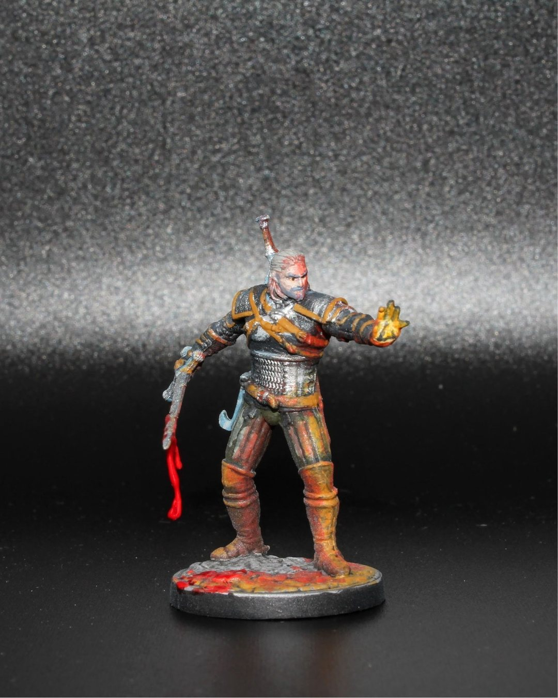
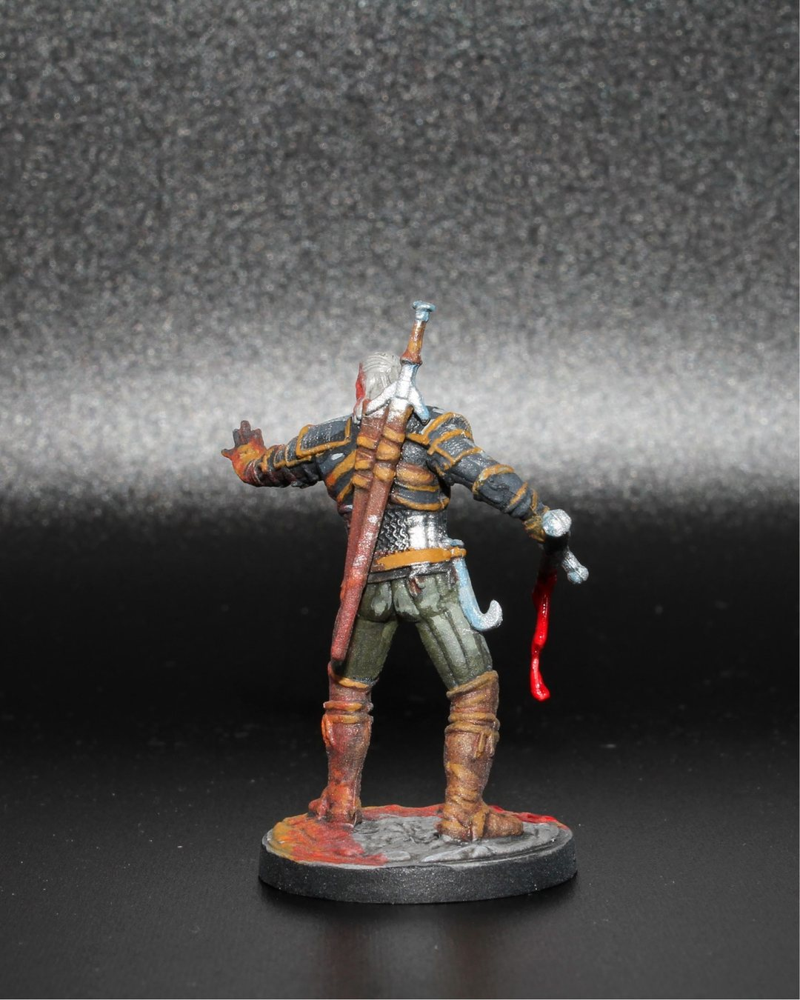

The Witcher Jul 21, 2025
Geralt
“‘Evil is evil. Lesser, greater, middling… makes no difference.’
This Geralt from The Witcher: Path of Destiny gave me a chance to lean hard into the blood and some dramatic OSL. I also slipped in a little Easter egg for fans of the video games — can you spot it? 🐺⚔️✨
#MiniaturePainting #TheWitcher #GeraltOfRivia #OSL #BloodEffects #BoardGames #TabletopGames #Warhammer #Miniatures #Painting #Art #Hobbies @go.on.board